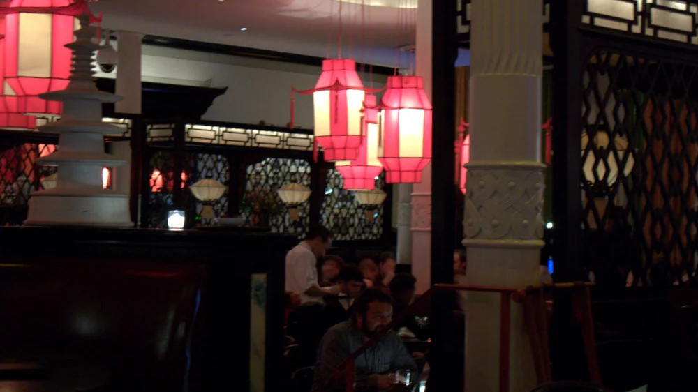
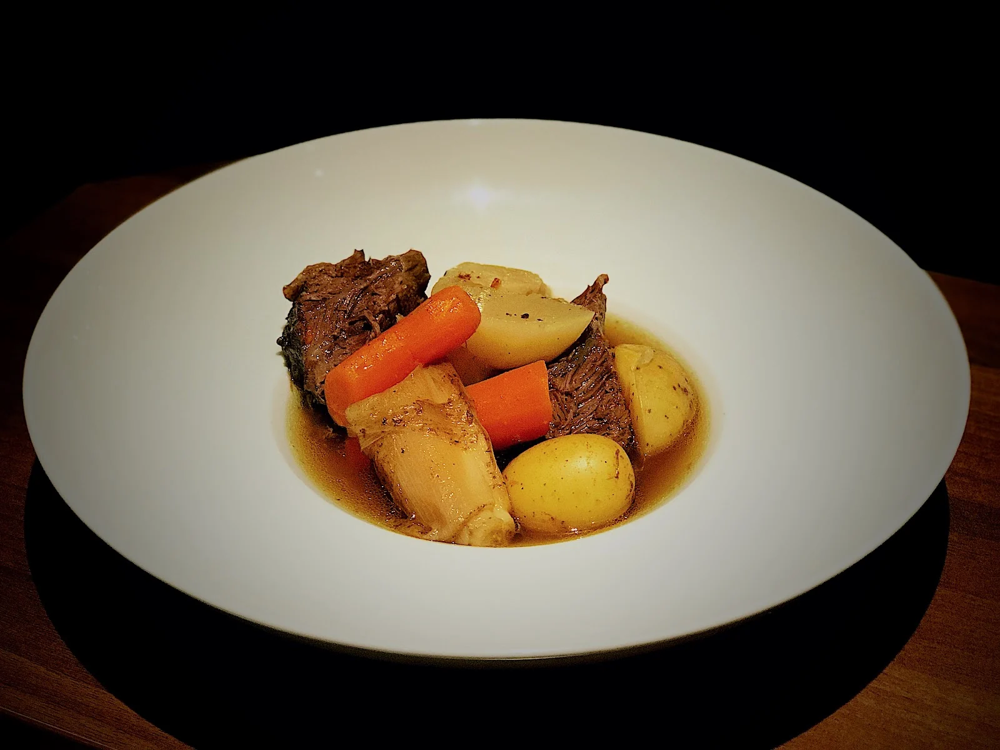
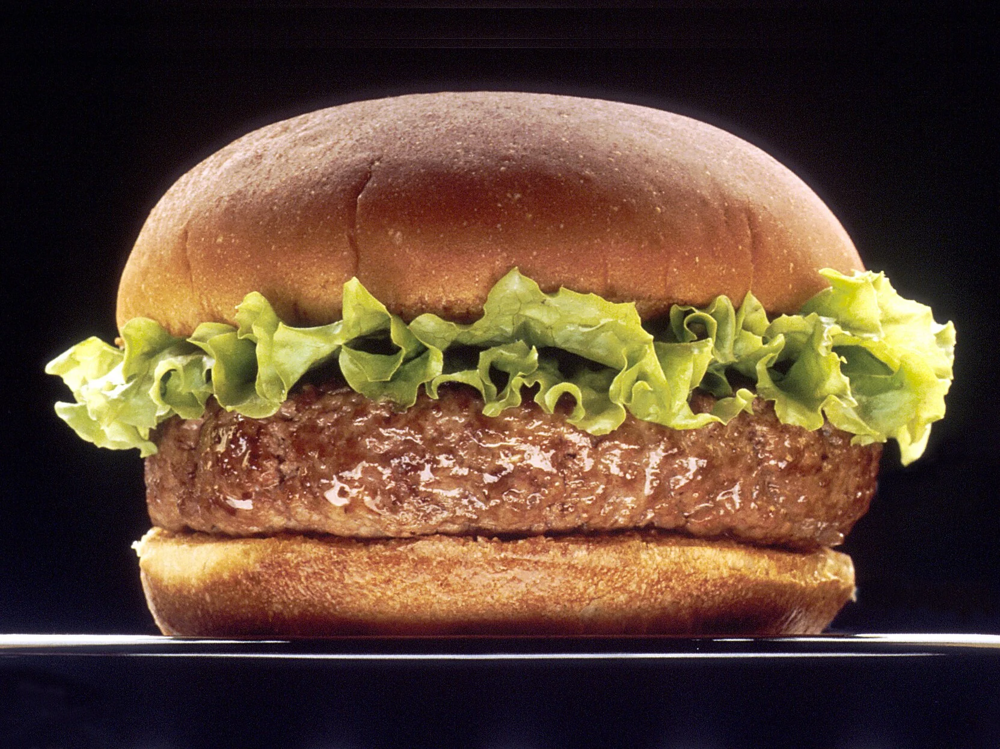
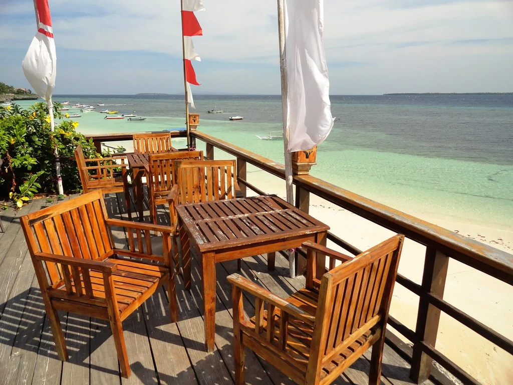

Certaines photos sont encore des images d'illustration. Envoyez-moi les vôtres et je remplace le reste.
Le bistrot
La brasserie
La Brasserie Beaulieu est une brasserie de quartier à Bonnevoie. Notre carte des vins réunit des producteurs français, luxembourgeois et d'ailleurs, à côté d'un menu de semaine, de burgers, de croque-monsieur et d'un fish and chips. La terrasse compte une quarantaine de places, il y a un brunch le dimanche et de la musique le jeudi.

En images
En images


Horaires
Horaires
- Tous les jours
- 10h00 – 1h00
Nous trouver
Nous trouver
- Appeler
- +352 26 48 33 02
- Adresse
- 25, rue Félix de Blochausen, L-1243 Luxembourg